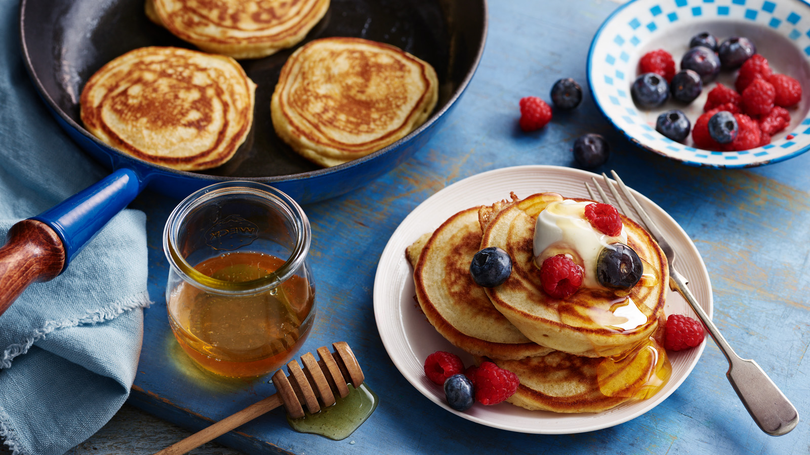

Ingredients
- 2 cups of self-raising flour
- An egg
- A cup of milk
- 1 tablespoon of butter
- vanilla essence(optional)
Recipe
- In a bowl, mix the flour and sugar
- Add the milk to to flour and sugar mixture
- Melt the butter and it to the mixture in the bowl
- Mix it well and add the vanilla essence
- Place your pan on medium heat and rub in some oil
- Using a spoon, scoop the mixture from the bowl and drop it on the pan
- Cook both sides until it turns golden brown
- Place the cooked dropscones in a bowl lined with kitchen paper towels
- Serve when hot with tea

Click here to watch the video